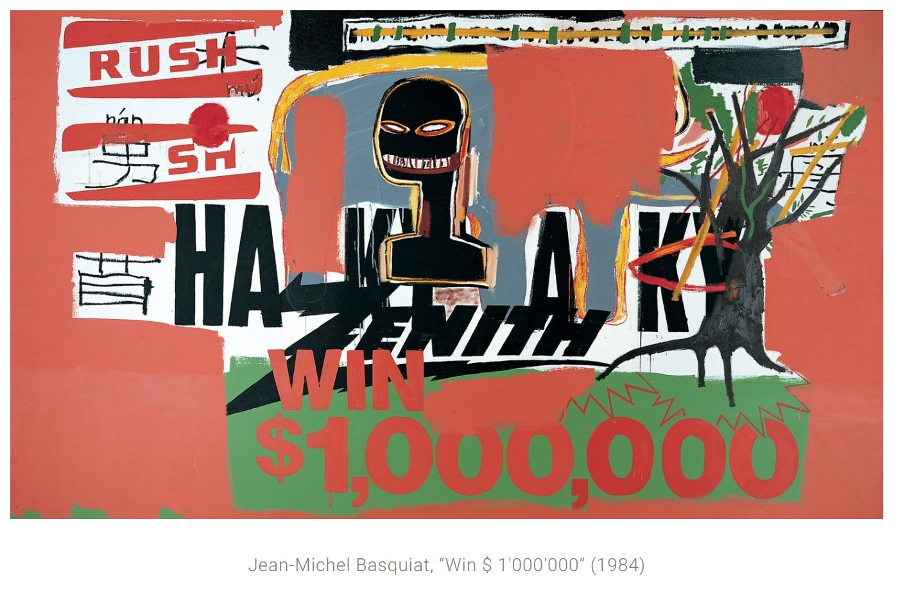

Exhibitions
Brand Royalty, Allouche Gallery, New York, New York, US, September 18–October 19, 2021.
Cultural & Artistic References


Notes
The drawing RE was used in the creation of this painting.
Brand Royalty, Allouche Gallery, New York, New York, US, September 18–October 19, 2021.

The drawing RE was used in the creation of this painting.